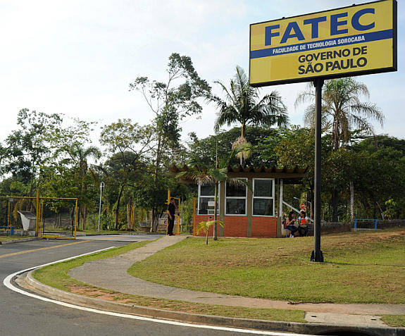

FATEC SOROCABA
A Faculdade de Tecnologia de Sorocaba, denominada desde 2011 como FATEC José Crespo Gonzales, também conhecida como Fatec Sorocaba ou simplesmente FATEC para os Sorocabanos, é uma instituição pública de ensino superior pertencente ao Centro Estadual de Educação Tecnológica Paula Souza (CEETEPS) e vinculada a UNESP, situada na cidade de Sorocaba - SP, na Av. Engenheiro Carlos Reinaldo Mendes 2015, no Alto da Boa Vista. Atualmente existem 68 FATECs em 60 diferentes cidades do estado de São Paulo, sendo que a de Sorocaba é a mais antiga